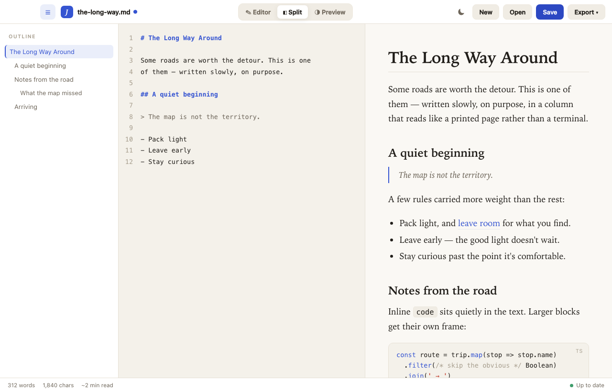
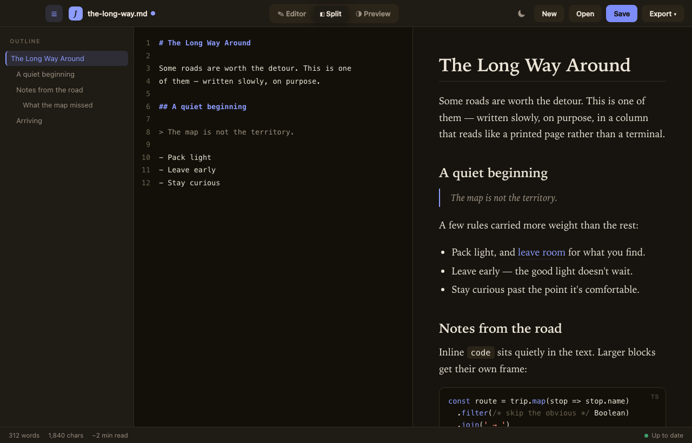

Write and preview markdown side by side — live rendering, a serif reading column, an outline, diagrams, and export. No clutter, just your words.

Built for focused writing on macOS.
Type on the left, watch it render on the right — in a serif reading column that looks like a printed page. Resizable.
A warm light mode and a cozy dark mode. Easy on the eyes, day or night.
Jump around with an auto-generated outline, and find anything in your document instantly.
Mermaid diagrams and syntax-highlighted code blocks render right inside your notes.
Paste a link onto selected text to make it a link; paste an image and it's saved beside your file.
Send your writing to PDF or HTML, or copy it as rich text — formatting intact.
Toggle with a keystroke; it remembers your choice.

Free for macOS. Signed and notarized by Apple — opens with no warnings.
Download JustWriteQuestions or feedback? me@akelvin.dev